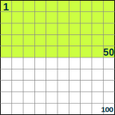
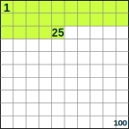
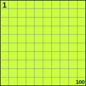
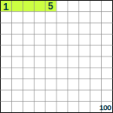

Percents (%)
When we say "Percent" we are really saying "per 100"
One percent (1%) means 1 per 100.
1% of this line is shaded green: it is very small isn't it?
|  | 50% means 50 per 100 (50% of this box is green) |
| 25% means 25 per 100 (25% of this box is green) |
 |
Try it Yourself:
Examples:
|  |
100% means all. Example: 100% of 80 is 100100 × 80 = 80 |
|
|
50% means half. Example: 50% of 80 is 50100 × 80 = 40 |
||
|  |
5% means 5/100ths. Example: 5% of 80 is 5100 × 80 = 4 |
Using Percent
Use the slider and try some different numbers
(What is 40% of 80? What is 10% of 200? What is 90% of 10?)
Because "Percent" means "per 100" think:
"this should be divided by 100"
So 75% really means 75100
And 100% is 100100, or exactly 1
(100% of any number is just the number, unchanged)
And 200% is 200100, or exactly 2
(200% of any number is twice the number)
A Percent can also be expressed as a Decimal or a Fraction
 |
|
Read more about this at Decimals, Fractions and Percentages.
Some Worked Examples
Example: Calculate 25% of 80
25% = 25100
And 25100 × 80 = 20
So 25% of 80 is 20
Example: 15% of 200 apples are bad. How many apples are bad?
15% = 15100
| And 15100 × 200 | = 15 × 200100 | |
| = 15 × 2 | ||
| = 30 apples |
30 apples are bad
Example: if only 10 of the 200 apples are bad, what percent is that?
As a fraction, 10200 = 0.05
As a percentage it is: 10200 x 100 = 5%
5% of those apples are bad
Example: A Skateboard is reduced 25% in price.
The old price was $120.
Find the new price.
First, find 25% of $120:
25% = 25100
And 25100 × $120 = $30
25% of $120 is $30
So the reduction is $30
Take the reduction from the original price
$120 − $30 = $90
The Price of the Skateboard in the sale is $90
Calculation Trick
This little rule can make some calculations easier:
x% of y = y% of x
Example: 8% of 50
8% of 50 is the same as 50% of 8
And 50% of 8 is 4
So 8% of 50 is also 4
The Word
Percent vs Percentage
My Dictionary says "Percentage" is the "result obtained by multiplying a quantity by a percent". So 10 percent of 50 apples is 5 apples: the 5 apples is the percentage.
But in practice people use both words the same way.